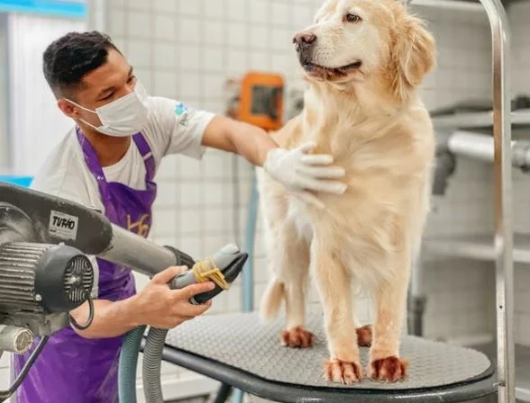
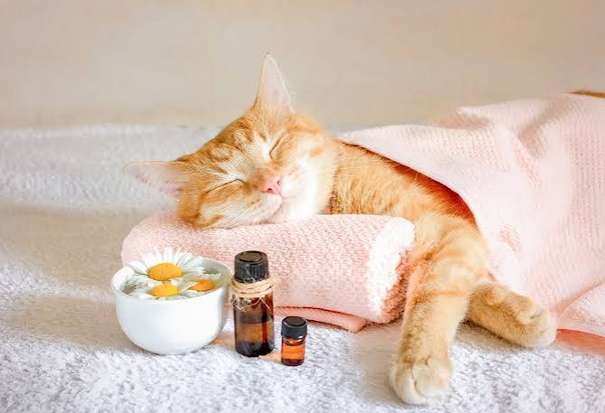

O serviço de banho oferece uma limpeza completa para o pet,
utilizando produtos adequados ao tipo de pelo e às necessidades
de cada animal. Passando por uma higienização em seguida de
secagem e escovação para deixar os pelos limpos, macios e bem cuidados.
Tosa
A tosa é realizada de acordo com as características do pelo
e as necessidades de cada pet. O serviço pode envolver a
remoção ou redução do excesso de pelos, além do acabamento
em regiões como rosto, patas e corpo.

Banho e Tosa
O serviço de banho e tosa reúne os principais cuidados de
higiene e estética em um único atendimento. O pet passa
inicialmente pelo banho e pela higienização, seguido de
secagem e escovação. Depois, é realizada a tosa escolhida
de acordo com o tipo de pelo e a necessidade do animal.

Aromaterapia
A aromaterapia pode ser oferecida como uma experiência
complementar durante o atendimento, criando um ambiente
mais tranquilo e agradável para o pet. Utiliza aromas
suaves e apropriados para animais.